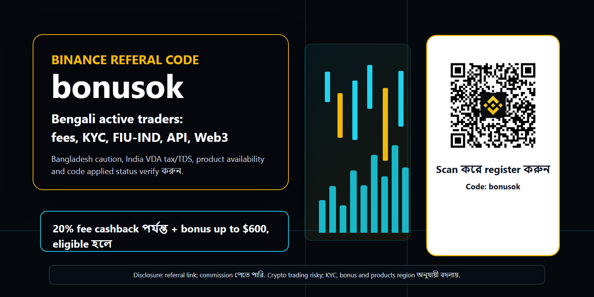
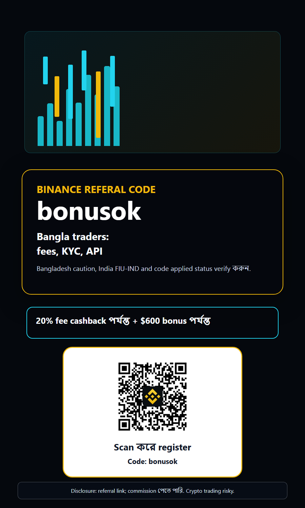
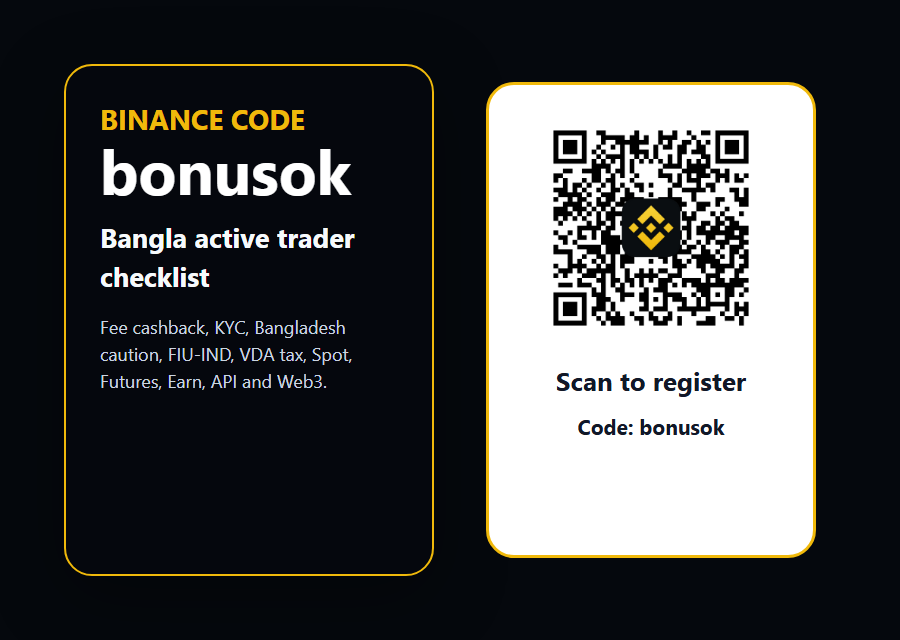

Disclosure: এই page referral link ব্যবহার করে। আপনি register বা trade করলে আমরা commission পেতে পারি। Crypto trading volatile; availability, KYC, bonus and products আপনার region ও eligibility অনুযায়ী বদলাতে পারে. Bangladesh residents local rules আগে যাচাই করবেন.
Binance referal code Bangla bonusok: Bengali active traders এর জন্য fee cashback, KYC, FIU-IND, API guide
Bangla/Bengali crypto traders এর জন্য Binance referal code bonusok guide: fee cashback, KYC, Bangladesh caution, India FIU-IND, VDA tax/TDS, Spot, Futures, Earn, API, Web3, bots এবং latest Binance updates. এটি financial advice নয়. Register করার আগে official Binance terms, local law, tax and product availability যাচাই করুন.


Real local QR inserted after rendering; QR target is Binance registration with ref=bonusok.
এই Bangla guide কার জন্য
Binance referal code Bangla, Binance referral code Bengali, Binance invite code, Binance bonus code, bonusok - এই ধরনের search intent সাধারণত শুধু একটি coupon চাইছে না। একজন Bengali trader জানতে চায় code কোথায় বসবে, fee cashback আদৌ useful কিনা, Bangladesh বা India থেকে account করা legal এবং practical কিনা, KYC ও tax record কিভাবে manage করতে হবে। তাই এই guide শুধু bonus headline নয়; active trader onboarding checklist.
Bangladesh, West Bengal, Assam, Tripura এবং global Bengali diaspora এক ভাষা ব্যবহার করলেও legal context এক নয়। India-based Bengali users-এর জন্য FIU-IND registration, VDA tax এবং TDS গুরুত্বপূর্ণ। Bangladesh residents-এর জন্য local rules অনেক বেশি restrictive; তাই এই page পরিষ্কারভাবে বলে: যেখানে crypto trading নিষিদ্ধ বা অনুমোদিত নয়, সেখানে signup, deposit, trade বা VPN bypass করা উচিত নয়।
Quick answer: bonusok কীভাবে ব্যবহার করবেন
নতুন Binance account খুললে registration link-এ ref=bonusok আছে কি না আগে দেখুন। QR scan করলে accounts.binance.com/register?ref=bonusok খুলবে। Account তৈরি হয়ে গেলে পরে referral code add করা অনেক সময় সম্ভব নয়, তাই email, phone, KYC, first deposit বা first trade করার আগে code applied status যাচাই করুন।
Offer wording সবসময় conditional. Eligible users 20% পর্যন্ত fee cashback এবং terms পূরণ করলে $600 পর্যন্ত bonus পেতে পারে। কিন্তু এটি guaranteed profit নয়, guaranteed cash নয়, এবং প্রত্যেক country, product বা account type-এ একইভাবে available হবে এমন নয়। Binance Reward Center, referral page, KYC level, region and campaign terms আবার দেখে নিন।
Bangladesh caution: compliance আগে, referral পরে
Bangladesh audience-এর জন্য সবচেয়ে গুরুত্বপূর্ণ অংশ হলো caution. Bangladesh Bank virtual currency নিয়ে restrictive stance নিয়েছে এবং local reports বারবার বলেছে trading of virtual coin or cryptocurrency allowed নয়। এই page তাই Bangladesh residents-কে কোনো restriction bypass করতে উৎসাহ দেয় না। আপনি যদি Bangladesh-এ থাকেন, local law, Bangladesh Bank notices, banking rules এবং professional legal advice আগে দেখুন।
VPN দিয়ে location বদলানো, false KYC, borrowed account, third-party payment, off-platform settlement বা local banking restriction লুকানো long-term account safety নষ্ট করতে পারে। Referral commission পাওয়ার জন্য এমন user আনা আমাদের লক্ষ্য নয়। Bengali speakers যারা legalভাবে Binance access করতে পারেন - যেমন India বা permitted diaspora markets - তাদের জন্যই CTA practical হতে পারে।
India context: FIU-IND, KYC এবং VDA tax
Binance India blog অনুযায়ী Binance Financial Intelligence Unit India, অর্থাৎ FIU-IND, reporting entity হিসেবে registration ঘোষণা করেছে এবং Indian users-এর জন্য website/app availability নিয়ে কথা বলেছে। Bengali-speaking Indian traders, বিশেষ করে West Bengal, Assam বা Tripura users, এই trust signal বিবেচনা করতে পারে। তবে FIU registration profit guarantee নয়; product availability account level ও region অনুযায়ী বদলাতে পারে।
India Income Tax Department Schedule VDA transaction-wise reporting দরকার হতে পারে। VDA income, TDS, ITR reporting, cost basis, trade history export, P2P records এবং bank reconciliation active trader-এর workflow-এর অংশ। এই page tax advice নয়; qualified tax professional দরকার হতে পারে। কিন্তু fee cashback দেখার আগে tax cashflow বোঝা জরুরি।
Active traders কেন fee cashback নিয়ে ভাববে
Long-term holder-এর জন্য referral bonus ছোট extra হতে পারে। কিন্তু active trader-এর জন্য fees PnL-এর real line item. Scalping, swing trading, grid execution, DCA rebalance, API strategy, high-volume spot rotation - সব জায়গায় maker/taker fee এবং spread result বদলায়। bonusok code থেকে fee cashback eligibility থাকলে সেটি cost-control advantage হতে পারে।
তবে fee cashback কখনো poor trading plan ঠিক করতে পারে না। Liquidity, order book depth, slippage, minimum notional, tick size, funding rate, withdrawal cost এবং tax impact একসাথে দেখতে হবে। Binance-এর broad market access useful, কিন্তু প্রতি pair-এর risk আলাদা।
Latest Binance hooks: Web3 API, Prediction Markets API, bots
Recent Binance announcements active Bengali traders-এর জন্য কয়েকটি useful hook দেয়। Binance Wallet Web3 API developers, institutions এবং advanced Web3 users-এর জন্য infrastructure angle তৈরি করে। Prediction Markets API এবং 2026-07-02 upgrade notice API-driven users এবং wallet users-এর জন্য stability and integration signal।
New trading pairs and Trading Bots services announcements active traders-এর attention ধরে। RE/U, RE/USD1, XPL/U, XPL/USD1 ধরনের pairs launch হলে volatility, liquidity এবং bot execution angle আসে। কিন্তু removal notices এবং bot service termination-ও সমান গুরুত্বপূর্ণ; affected pairs-এ bot cancel বা update না করলে loss হতে পারে।
Registration checklist: deposit করার আগে
Step 1: official Binance domain বা এই page-এর sponsored referral CTA ব্যবহার করুন। Step 2: URL-এ ref=bonusok আছে কি না দেখুন। Step 3: strong password, 2FA, anti-phishing code, device management এবং withdrawal whitelist set করুন। Step 4: KYC documents প্রস্তুত রাখুন। Step 5: reward/referral area-তে code applied status verify করুন।
Step 6: deposit route, P2P rules, payment method, network fee, withdrawal fee এবং minimum amount দেখুন। Step 7: first trade small size-এ করুন। Step 8: trade export, tax report এবং record keeping কোথায় পাওয়া যায় জানুন। এই slow process serious trader-এর জন্য faster mistake prevention.
30-day Bengali active trader plan
Day 1-3: account security, KYC, referral code confirmation, app settings, wallet structure, fee schedule এবং support center পড়ুন। বড় deposit করার দরকার নেই। Bangladesh resident হলে এই stage-তেই stop করে local legal position verify করুন। India বা permitted market user হলে next steps বিবেচনা করুন।
Day 4-14: Spot market small order, limit order, stop-limit, watchlist, alerts, funding route এবং record export test করুন। Day 15-30: Futures, Margin, Earn, bots, Web3 বা API নিয়ে ভাবুন, কিন্তু শুধু product visible মানেই suitable নয়। Liquidation, leverage, APY terms, smart contract risk এবং tax record আগে বোঝা দরকার।
Spot, Futures, Margin: একই account, আলাদা risk
Spot trading-এ আপনি asset buy/sell করেন। Futures-এ leverage, funding rate, liquidation price, maintenance margin এবং sudden volatility থাকে। Margin-এ borrowed funds risk আছে। Bengali beginners অনেক সময় exchange interface দেখে মনে করে সব feature use করা উচিত; বাস্তবে derivatives শুধু তখনই ব্যবহার করা উচিত যখন position sizing এবং stop-loss discipline পরিষ্কার।
Bangladesh/India context-এ product availability extra important. একটি feature বন্ধ, restricted বা region-specific হতে পারে। বন্ধুর account-এ feature দেখলেই আপনার account-এ available বা legal হবে ধরে নেওয়া ভুল। Terms, risk warning এবং local law check করুন।
API এবং automation: developer traders-এর জন্য
Bengali tech community-তে Python, JavaScript, TradingView webhook, spreadsheet models এবং custom bots ব্যবহারকারী trader আছে। Binance API তাদের জন্য useful হতে পারে, কিন্তু API security ছাড়া automation বিপজ্জনক। Withdrawal permission off, IP restriction, separate API key, logs, alerts, rate-limit handling, dry-run এবং small-size testing দরকার।
Tick size updates, exchangeInfo endpoint, minimum notional, step size, precision values, order status handling - এগুলো bot reliability-র core. New pair launch হলে bot আগে pause করে liquidity/slippage test করুন। Fee cashback advantage হলেও bot bug একদিনে তার চেয়ে বড় loss আনতে পারে।
Earn, stablecoin এবং idle capital
Active trader সবসময় position ধরে রাখবে এমন নয়। Signal না থাকলে, volatility abnormal হলে বা tax planning দরকার হলে idle capital management দরকার। Binance Earn বা stablecoin tools কিছু user-এর জন্য useful হতে পারে, কিন্তু APY guarantee নয়। Redemption term, asset risk, platform risk, issuer risk এবং availability পড়া দরকার।
Bangladesh residents-এর ক্ষেত্রে local restrictions আরও গুরুত্বপূর্ণ; stablecoin বা crypto transfer banking/FX/AML issue তৈরি করতে পারে। India users tax and TDS impact দেখতে হবে। Passive income promise নয়; এটি শুধু optional capital workflow discussion.
P2P এবং payment safety
P2P route দ্রুত মনে হলেও risk high হতে পারে। Merchant verification, completion rate, order limit, payment method, price spread, appeal process এবং platform rules দেখা দরকার। Fake screenshot, third-party account, off-platform settlement, suspicious bank narration, urgency pressure - সব avoid করুন।
Clean payment records tax এবং compliance দুটির জন্যই useful. Small test transaction, own bank account, no external chat promise, no escrow bypass এবং screenshot archive রাখা practical habit. Referral user যদি প্রথম deposit-এই problem পায়, long-term trader হওয়া কঠিন।
Bangladesh বনাম India: simple decision tree
আপনি যদি Bangladesh resident হন, প্রথম question হলো: local law এবং Bangladesh Bank position কি crypto trading বা virtual asset transaction allow করে? যদি answer uncertain বা negative হয়, তাহলে referral link ব্যবহার করবেন না, account fund করবেন না, trade করবেন না। Education পড়া আলাদা বিষয়; transaction এবং trading আলাদা risk. কোনো website globalভাবে open থাকলেই local permission তৈরি হয় না।
আপনি যদি India resident Bengali speaker হন, তাহলে Binance FIU-IND registration, KYC, VDA tax, TDS, banking records এবং product availability দেখে সিদ্ধান্ত নিন। আপনি যদি UK, EU, Middle East, Singapore, Canada বা অন্য diaspora market-এ থাকেন, local jurisdiction rules আলাদা হতে পারে। একই Bengali language guide পড়লেও action সব market-এ একই হবে না।
Announcement monitoring: active trader-এর daily habit
Binance announcement center active trader-এর জন্য শুধু news page নয়; এটি risk-control tool. New pair open হলে liquidity opportunity আসে, কিন্তু removal notice, delisting, bot service termination, tick-size update বা wallet maintenance notice না পড়লে execution risk বাড়ে। Bengali trader যদি serious volume করতে চায়, তাহলে watchlist pair-এর announcement alerts রাখা উচিত।
API user হলে GET /api/v3/exchangeInfo, status endpoint, order reject reason এবং precision changes monitor করা দরকার। Bot strategy live থাকলে pair removal বা tick-size adjustment ignore করা বিপজ্জনক। Referral code দিয়ে fee cashback পেলে cost কমতে পারে, কিন্তু exchange update না পড়লে avoidable loss হতে পারে।
Security stack: account খুলে থেমে যাবেন না
Strong password এবং 2FA শুধু শুরু। Anti-phishing code, withdrawal whitelist, device review, address book lock, app permissions, email security, SIM-swap risk, password manager এবং recovery plan দরকার। Bengali users অনেক সময় Telegram/WhatsApp signal group থেকে phishing link পায়; কোনো admin, support agent বা mentor seed phrase, OTP বা API secret চাইলে সেটি scam।
API key কখনো screenshot বা chat-এ পাঠাবেন না। Trading bot vendor ব্যবহার করলে read/trade permission আলাদা করুন, withdrawal permission বন্ধ রাখুন, IP whitelist দিন এবং small capital দিয়ে test করুন। Binance account safe না হলে referral benefit অর্থহীন।
Common mistakes যা referral value নষ্ট করে
Mistake one: bonus পাওয়ার আশায় terms না পড়ে register করা। Mistake two: Bangladesh restriction বা India tax context ignore করা। Mistake three: first deposit বড় করা এবং small test transaction না করা। Mistake four: Futures leverage দিয়ে শুরু করা। Mistake five: tax records না রাখা। Mistake six: bot চালিয়ে announcement center না দেখা।
Quality referral মানে এমন user যে account clean রাখে, KYC complete করে, product risk বোঝে, deposit করে, first trade করে এবং 30/60/90 days active থাকতে পারে। এই guide তাই hype কমিয়ে operational detail বাড়িয়েছে। কম কিন্তু serious registrations আমাদের জন্য বেশি valuable।
Bonus hunters নয়, quality referrals
এই page bonusok code দেখালেও মূল message bonus নয়। মূল message: legal availability check করুন, code verify করুন, KYC clean করুন, tax/compliance বুঝুন, product risk বুঝুন, তারপর disciplined trading করুন। এই framing random bonus hunter কমায় এবং serious users বাড়ায়।
SEO keywords intentional: Binance referal code Bangla, Binance referral code Bengali, Binance invite code, bonusok, fee cashback, KYC, FIU-IND, Bangladesh crypto restriction, VDA tax, TDS, Spot, Futures, Earn, API, Web3. Bengali users English crypto terms এবং Bangla sentence মিশিয়ে search করে; তাই content mixed but natural.
Portfolio workflow এবং custody
এক exchange-এ সব capital রাখা প্রয়োজন নয়। Trading capital, long-term holding, tax reserve, experiment budget এবং emergency cash আলাদা রাখলে impulsive trading কমে। Binance execution venue হতে পারে, কিন্তু custody, concentration risk এবং self-custody আলাদা decision.
Web3 Wallet বা on-chain tools ব্যবহার করলে seed phrase, phishing, smart contract approval, bridge risk, wallet permissions এবং device security বুঝতে হবে। Referral code দিয়ে শুরু করা easy; capital protection কঠিন। Serious trader এই পার্থক্য বোঝে।
FAQ
bonusok Bangladesh users-এর জন্য কি safe? Bangladesh residents প্রথমে local law verify করবেন; যদি crypto trading/transaction permitted না হয়, register বা trade করা উচিত নয়। India users-এর জন্য FIU-IND/KYC/tax context আলাদা।
QR কোথায় যায়? QR target হলো https://accounts.binance.com/register?ref=bonusok. Bonus guaranteed? না। Eligibility, KYC, region and terms অনুযায়ী cashback/bonus বদলাবে। Futures কি beginners-এর জন্য? না; leverage বুঝে, small size এবং risk budget ছাড়া নয়।
Code verification এবং risk budget
Register করার পর reward/referral section-এ bonusok বা referral benefit visible আছে কি না দেখে রাখুন। না দেখলে first deposit করার আগে support documentation পড়ুন। Duplicate account বা self-referral করার চেষ্টা করবেন না; এতে account restriction হতে পারে।
প্রথম 30 দিনের জন্য লিখিত risk budget রাখুন: total capital, first month maximum loss, single trade risk, allowed pairs, no-trade days, tax reserve এবং emergency withdrawal plan. Referral code entry point, কিন্তু trading discipline retention তৈরি করে।
Final checklist
আপনি যদি Bengali speaker হন এবং এমন jurisdiction-এ থাকেন যেখানে Binance ব্যবহার legal and available, তাহলে bonusok referral code fee cashback angle-এর জন্য useful entry point হতে পারে। Register করার আগে code applied status, KYC, country rules, product availability এবং tax reporting যাচাই করুন।
আপনি যদি Bangladesh resident হন, এই guide আপনাকে restriction bypass করতে বলছে না। Local regulatory position পরিষ্কার না হলে trade করবেন না। Referral revenue long-term আসে clean, legal, active traders থেকে - risky shortcuts থেকে নয়।

Sources checked
- Binance announcement center
- Binance Wallet Web3 API
- Binance Wallet Prediction Markets API
- Binance Wallet Prediction Markets upgrade notice
- Binance new trading pairs and trading bots
- Binance spot pair removal notice
- Binance India FIU-IND registration
- Bangladesh Bank virtual currency circular PDF
- Income Tax India Schedule VDA
Risk warning: Crypto, derivatives, bots, Web3 products and market-linked rewards involve risk. Do not trade with money you cannot afford to lose. Do not bypass restrictions, do not use false KYC, and do not treat any bonus as guaranteed profit.